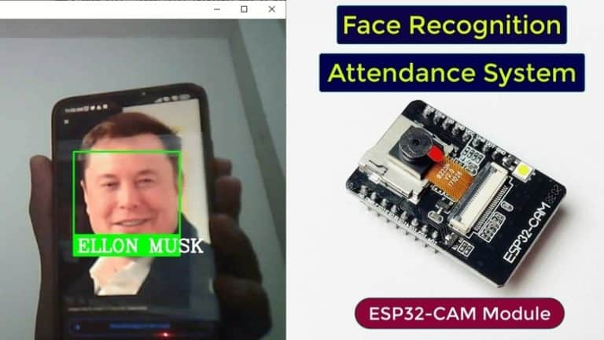
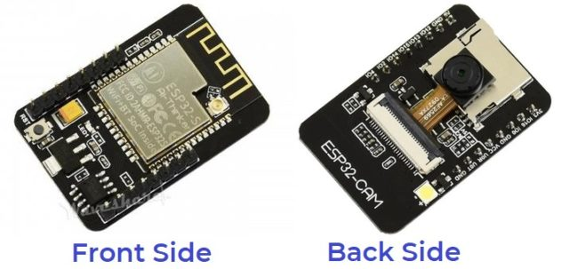
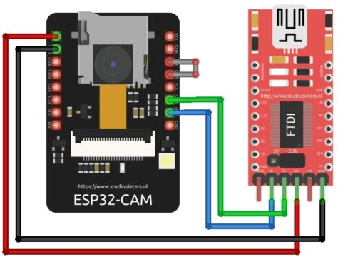
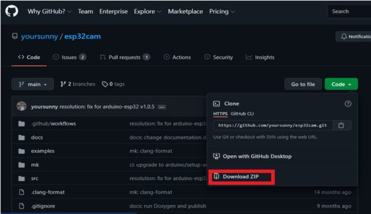

Overview: Face Recognition Attendance System using ESP32 CAM
This tutorial introduces the topic of the Face Recognition Based Attendance System using ESP32 CAM Module. We will be using OpenCV & Visual Studio for this application. OpenCV is an open-sourced image processing library that is very widely used not just in industry but also in the field of research and development. Visual Studio is an IDE made by Microsoft for different types of software development & contains completion tools, compilers, and other features to facilitate the software development process.
In this project we will learn, how to create a Face Recognition Based Attendance system using ESP32 CAM and Python. The main heavy program will be at the server-side that is our computer, or one can even use raspberry-pi as a server. In this attendance system, we will not just detect the person but also store the information of the person detected in a Microsoft Excel File. Moreover, the duration of time they have stayed in the frame is also recorded into an excel sheet.
The tutorial also contains information about features, pins description, and the method to program ESP32 Camera Module using FTDI Module. We will also set up the Arduino IDE for the ESP32 Camera Module. We will also upload the firmware and then work on the Face Recognition part. The script for Face Recognition is written in the python programming language, thus we will also have to install Python and its required Libraries.
Bill of Materials
The following is the list of Bill of Materials for building an Attendance System Project. TheESP32 CAM when combined with other hardware & firmware identify the object & record attendance.You can purchase all these components from Amazon.
| S.No |
Components |
Quantity |
Purchase Link |
| 1 |
ESP32-CAM Board AI-Thinker |
1 |
Amazon |
| 2 |
FTDI Module |
1 |
Amazon |
| 3 |
Micro-USB Cable(Type-C) |
1 |
Amazon |
| 4 |
Jumper Wires |
10 |
Amazon |
ESP32 CAM Module
The ESP32 Based Camera Module developed by AI-Thinker. The controller is based on a 32-bit CPU & has a combined Wi-Fi + Bluetooth/BLE Chip. It has a built-in 520 KB SRAM with an external 4M PSRAM. Its GPIO Pins have support like UART, SPI, I2C, PWM, ADC, and DAC.

The module combines with the OV2640 Camera Module which has the highest Camera Resolution up to 1600 × 1200. The camera connects to the ESP32 CAM Board using a 24 pins gold plated connector. The board supports an SD Card of up to 4GB. The SD Card stores capture images.
To learn in detail about the ESP32 Camera Module you can refer to our previous Getting Started Tutorial.
ESP32-CAM FTDI Connection
The board doesn’t have a programmer chip. So In order to program this board, you can use any type of USB-to-TTL Module. There are so many FTDI Module available based on CP2102 or CP2104 Chip or any other chip.
Make a following connection between FTDI Module and ESP32 CAM module.

| ESP32-CAM |
FTDI Programmer |
| GND |
GND |
| 5v |
VCC |
| UOR |
TX |
| UOT |
RX |
| GPIO0 |
GND |
Connect the 5V & GND Pin of ESP32 to 5V & GND of FTDI Module. Similarly, connect the Rx to UOT and Tx to UOR Pin. And the most important thing, you need to short the IO0 and GND Pin together. This is to put the device in programming mode. Once programming is done you can remove it.
Installing ESP32CAM Library
Here we will not use the general ESP webserver example rather another streaming process. Therefore we need to add another ESPCAM library. The esp32cam library provides an object oriented API to use OV2640 camera on ESP32 microcontroller. It is a wrapper of esp32-camera library.

Go to the following Github Link and download the zip library as in the image
Once downloaded add this zip library to Arduino Libray Folder. To do so follow the following steps:
Open Arduino -> Sketch -> Include Library -> Add .ZIP Library… -> Navigate to downloaded zip file -> add
Source Code/Program for ESP32 CAM Module
Here is a source code for Face Recognition Based Attendance System using ESP32 CAM & OpenCV . Copy the code and paste it in the Arduino IDE.